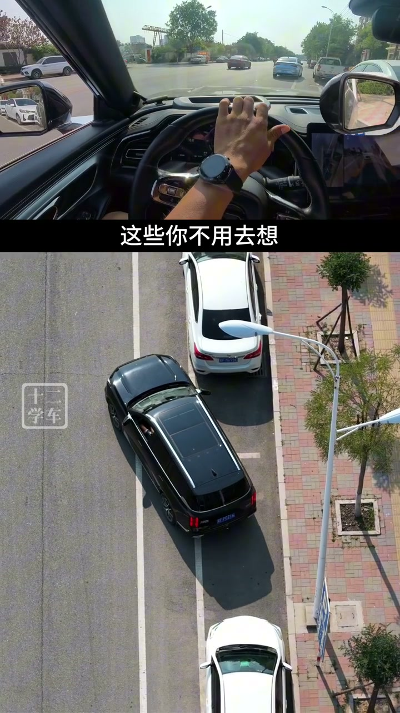

内容要点
这段视频围绕「XiaoHongShu video #676e8905000000000902f77a」展开，按时间介绍其中的关键环节。侧方停车入库时,难免会出现方向打早或者打晚了。
开场与主题引入
侧方停车入库时,难免会出现方向打早或者打晚了。导致出现车身只停进半的车位,或者后轮压马路牙子了。遇到这两个情况,该如果调整,第一种情况。停下来以后,发现车里马路牙子远了。很多新手会由打方向往前掉,然后由往后倒,在库内依赖一曲。最后我不知道怎么调整吗?。其实很简单,我们把方向左打满,往左前上再出去。那往前出出多少?。你只需要看左后使径,出现后车的整个车头后。回向方向盘,继续往后倒

核心操作步骤
左后轮即将压线时,方向盘向左打满入库,看右后使径。车身与路岩平行的时候,把方向回正停车。车子也顺利入库成功。第二种情况,就是后轮离马路牙子近了。这个时候,很多新手朋友会选择出去重来一次。其实你只需要把方向向右打满,往前上一上。然后方向左打满,往后倒一倒。车身跟马路牙子平行的时候,调整前后距离。车子也能顺利入库成功。关注,主业还分享了更多驾驶小技巧

总结
左后轮即将压线时,方向盘向左打满入库,看右后使径。